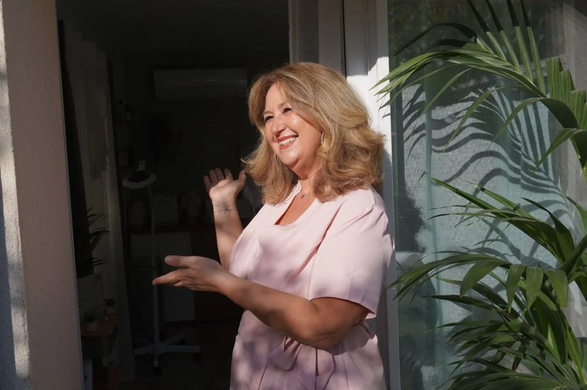
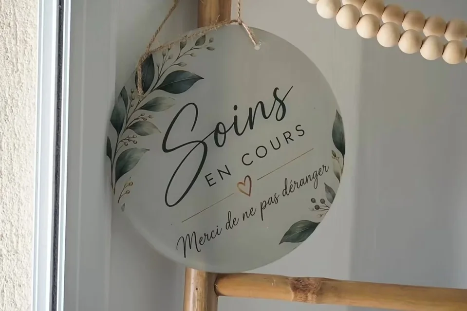
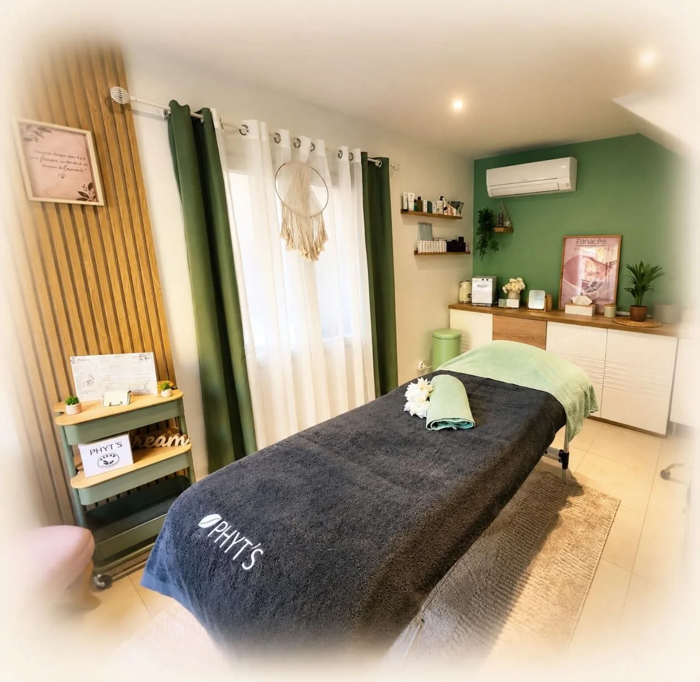
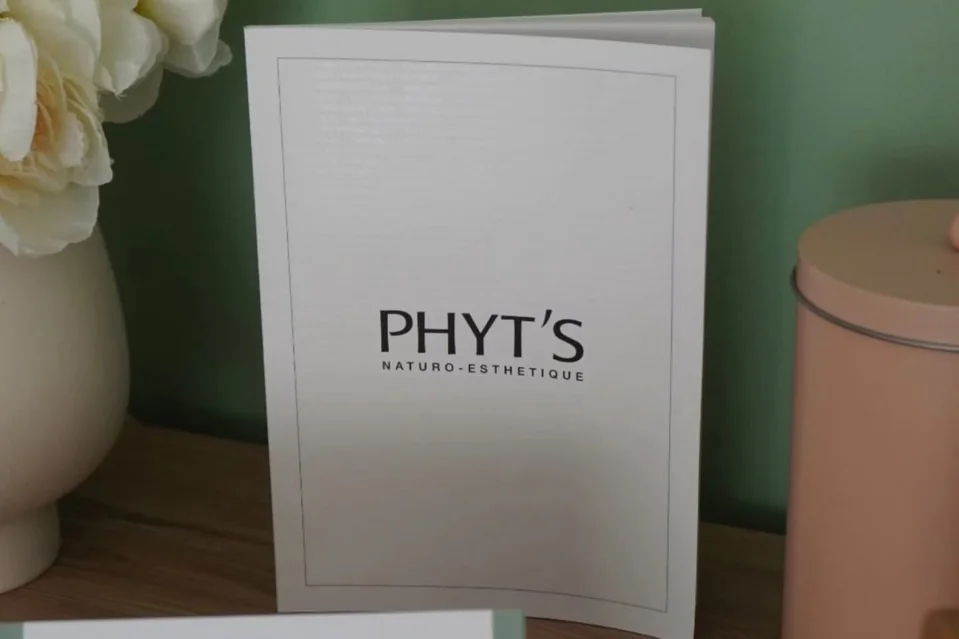

Véro Esthétique institut de beauté
Le monde peut attendre.
Une porte qui s’ouvre, un sourire,
et une heure rien qu’à vous.

Soins en cours. Merci de ne pas déranger.
Dehors, tout continue.
Ici, plus rien ne presse.

Ici, le temps ralentit.
La cabine vert sauge, lin et lumière douce

La personne
Avant le soin,
il y a quelqu’un.
Chez Véro Esthétique, la beauté se vit dans les détails : un accueil souriant, une ambiance apaisante, le plaisir de se laisser chouchouter.
Vous hésitez entre plusieurs soins ? On en parle ensemble, et l’on choisit celui qui vous ressemble.
Au plaisir de vous accueillir, Véro
Le film 0:24
Bienvenue
dans mon univers.
Vingt-quatre secondes à l’institut, en compagnie de Véro. Avec le son, c’est encore mieux.
La carte des soins
Qu’aimeriez-vous
ressentir aujourd’hui ?
Visagerévéler votre éclat
Les soins PHYT’S, naturo-esthétiques : Aqua Phyt’s, Multi Vital, Panacée, Sublim’Eyes. Et le soin à l’aveugle By Véro, pour celles et ceux qui préfèrent se laisser surprendre.
Tarifs sur la carte de l’institut.
Corpss’offrir une escapade
Les escapades sensorielles : un temps pour la détente, le corps enfin au repos, l’esprit ailleurs.
Tarifs sur la carte de l’institut.
Épilationstout en douceur
Visage et corps, création de sourcils, prestations au masculin et forfaits associant plusieurs zones.
- Sourcils
- 11 €
- Lèvre supérieure
- 10 €
- Demi-jambes
- 19 €
Regard & mainssublimer les détails
Rehaussement et teinture de cils, teinture des sourcils, maquillage, beauté des mains et des pieds.
- Rehaussement + teinture de cils
- 65 €

Les attentions
Les petites choses
qui font tout.
Une serviette pliée avec soin, des fleurs blanches, un miroir à main. Et les produits naturo-esthétiques PHYT’S, choisis par Véro.

Avant de venir.
Comment prendre rendez-vous ?
Appelez Véro au 07 82 77 29 46 ou envoyez-lui un SMS. Le créneau se décide directement avec elle.
Je ne sais pas quel soin choisir.
C’est normal. Parcourez la carte, puis appelez Véro : vous choisirez ensemble, selon vos envies.
Où voir tous les tarifs ?
Sur la carte complète de l’institut. Pour confirmer un prix, un simple appel suffit.

Comment préparer ma venue ?
En prenant rendez-vous, demandez à Véro l’accès à l’institut et les conseils propres au soin choisi.
Soixante minutes plus tard
Prenez
votre heure.
0782772946
Votre beauté, vos envies, votre moment.